Members Mobile Installs
Some of the custom mobile radio installs of our members
Michael KE0MZF fabricated this sturdy tripod mount for his radio
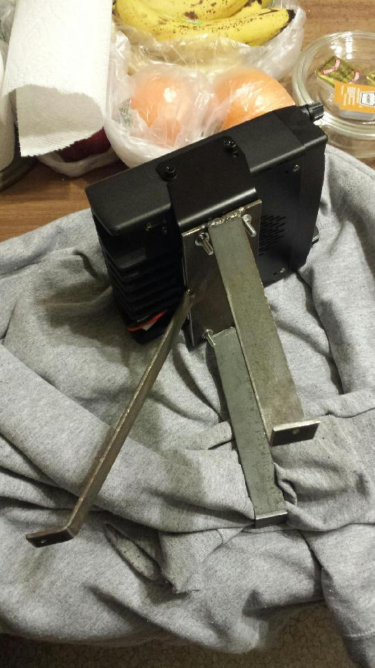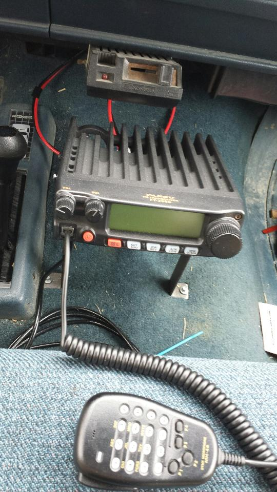
KD0YTE's install with radio hidden in center console compartment. Mic on lanyard
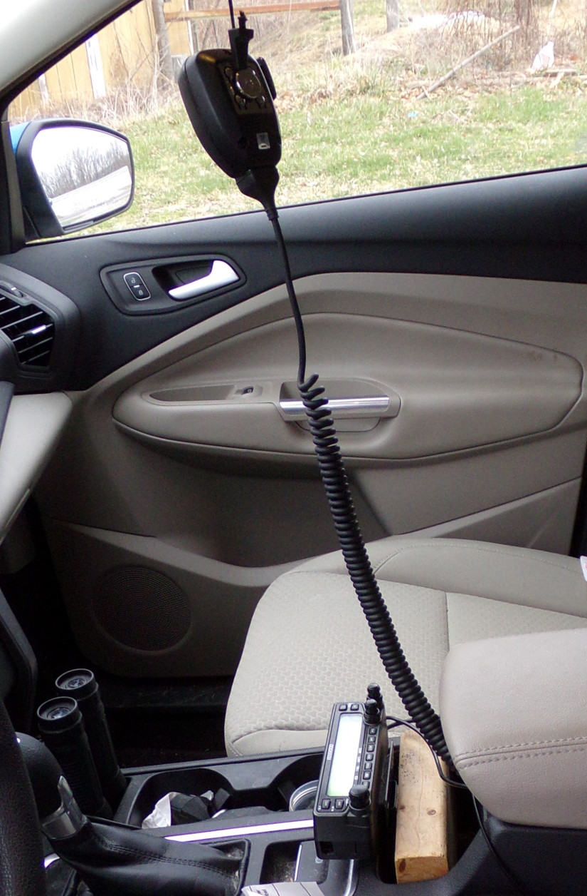
AD0B's baofeng HT car clip mounts attached using industrial strength velcro.
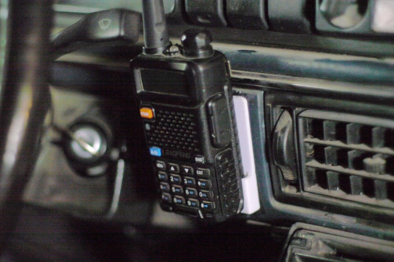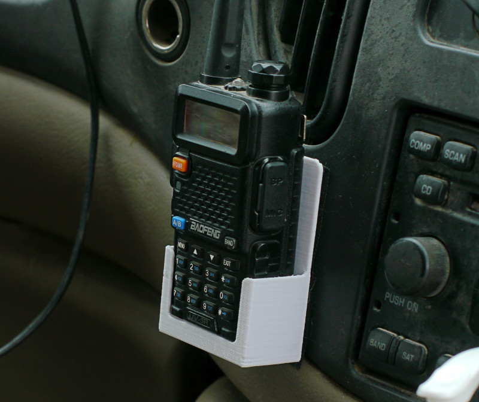
Matt NR0Q has this fully loaded setup in his truck, description below
 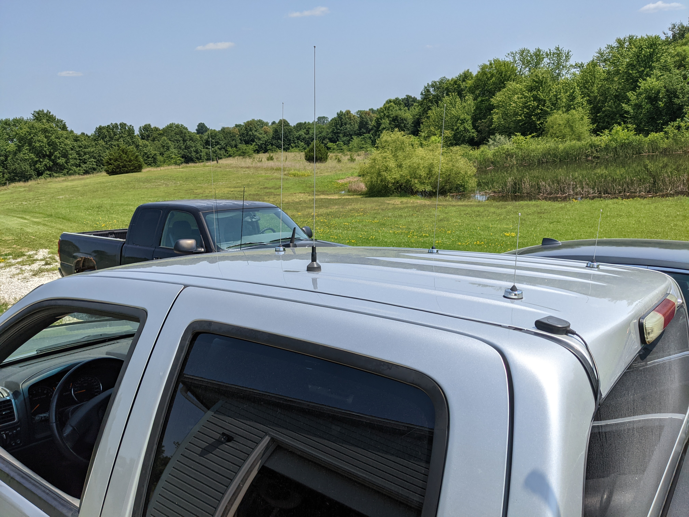
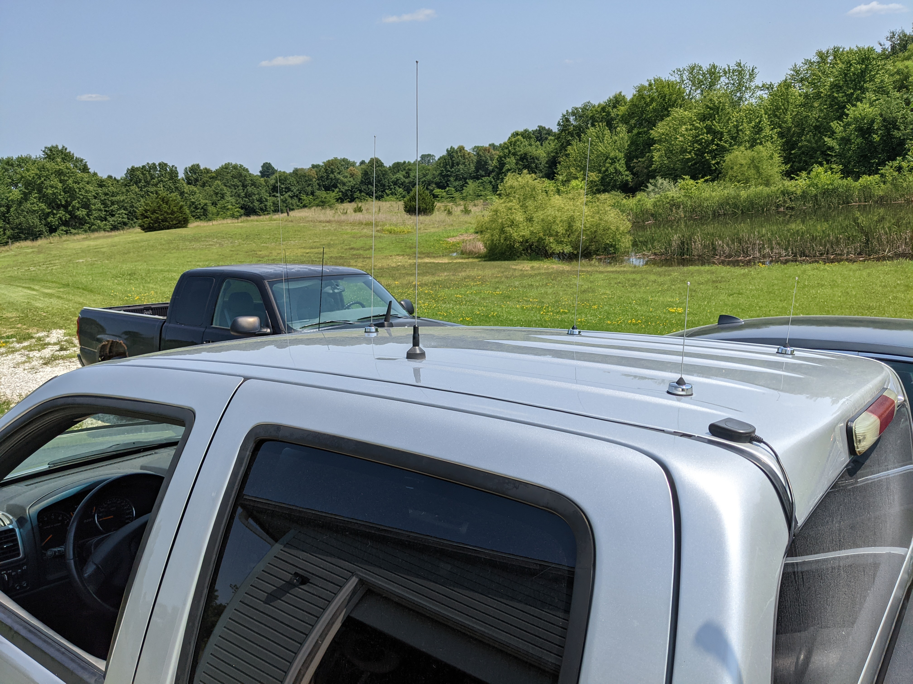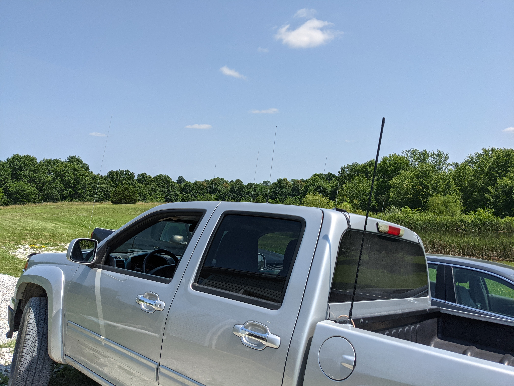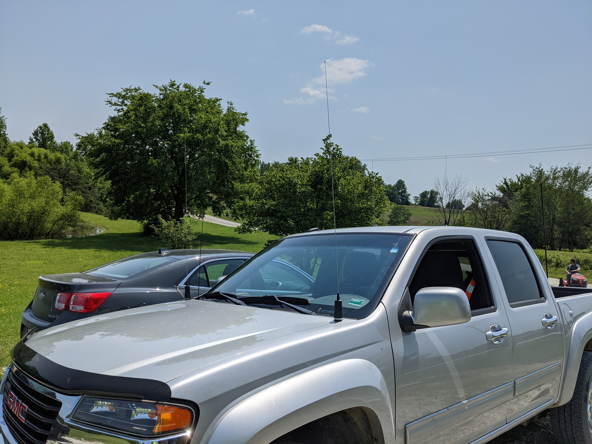
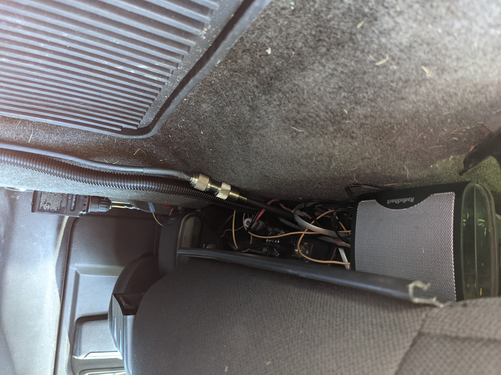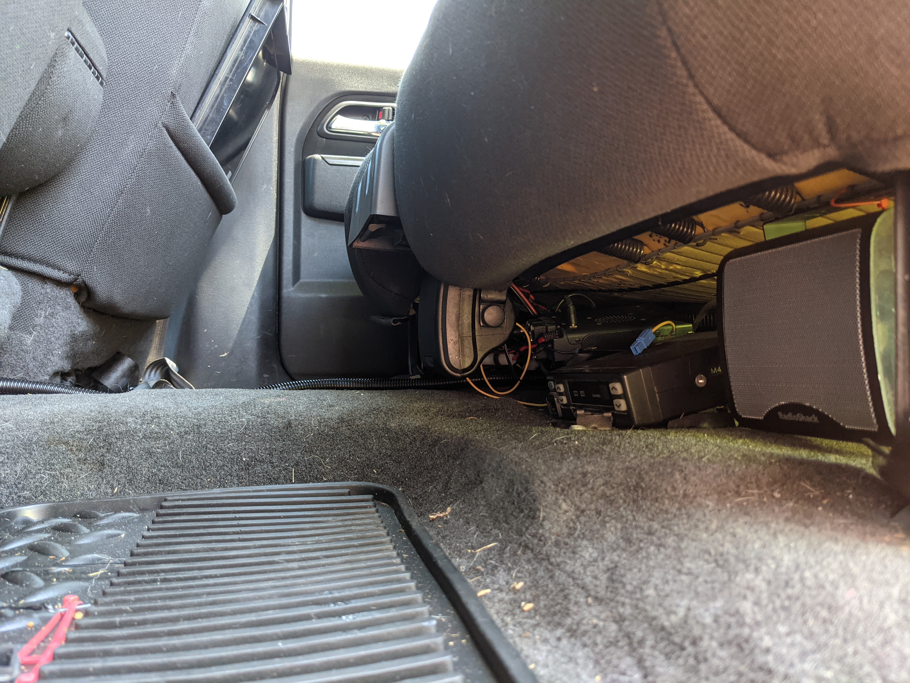
From Matt
"Yaesu FT-8900 mounted under the back seat, control head up front.
Kenwood TK-762G for APRS (144.39 MHz) under the back seat with a TinyTrak4
Icom IC-F5021 for public safety
Cobra 29 LTD Classic CB"
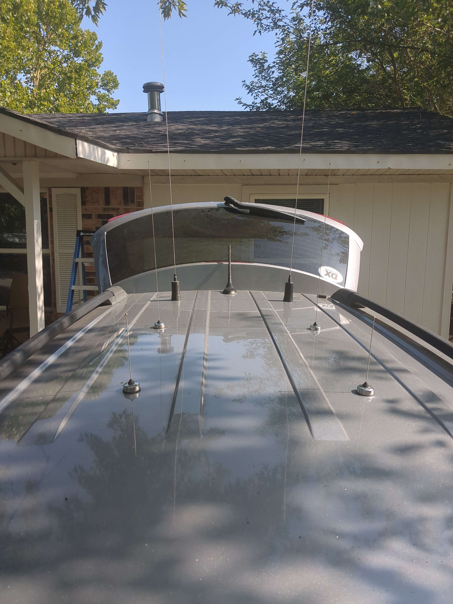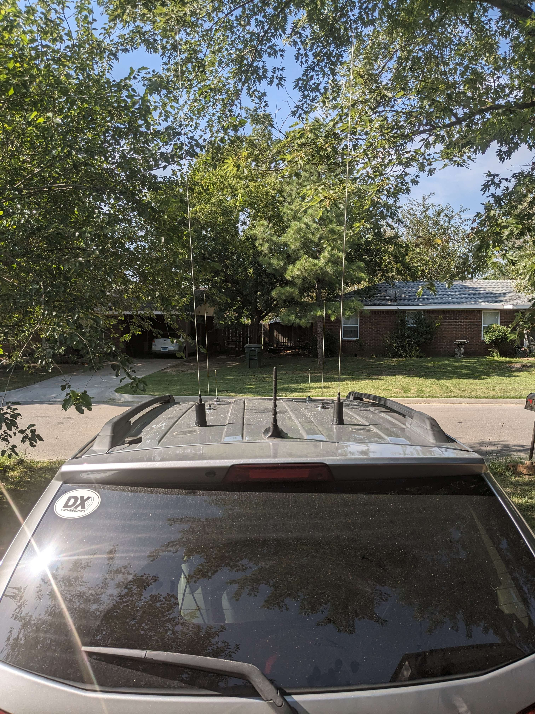
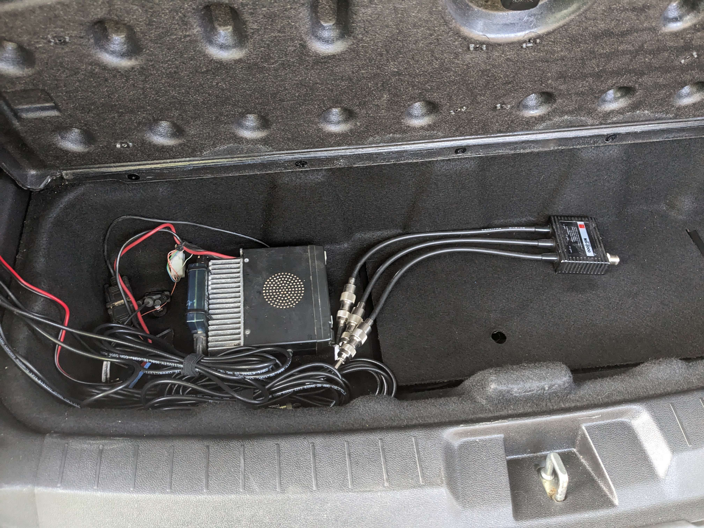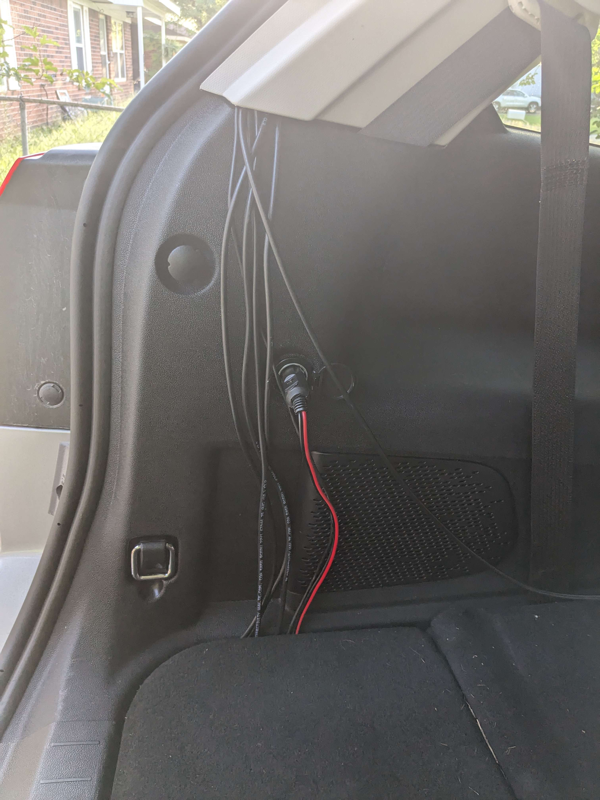
Another one from Matt
© 2015 Nemoarc.org All rights reserved. Web design from a template by: All Art Directory